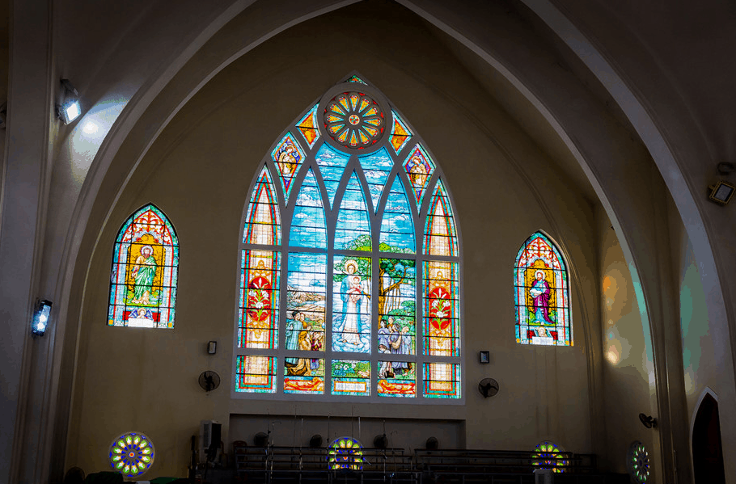
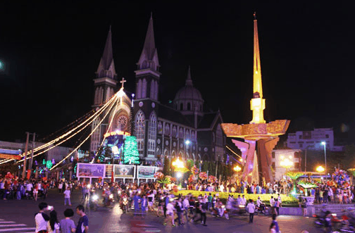

Đến Thủ Dầu Một mà không ghé tham quan nhà thờ Chánh toà giáo phận Phú Cường quả là một thiếu sót. Hình ảnh ngôi nhà thờ cũ với tiếng chuông ngân nga mỗi chiều đã được thay thế bằng một ngôi nhà thờ mới theo phong cách Gothic nhưng dáng dấp đầy hiện đại sau khi được tôn tạo.
Nhà thờ Phú Cường còn được gọi với cái tên đầy đủ là Nhà thờ Chánh tòa giáo phận Phú Cường. Được xây dựng nằm trên một gò đất ngay ngã 6 trung tâm phường Phú Cường, thành phố Thủ Dầu Một. Điều này tạo cho nhà thờ một nét vô cùng độc đáo và mới lạ trong toàn bộ kiến trúc.
Chúng ta ngược dòng thời gian quay trở lại những năm 1864, một ngôi nhà thờ bằng gạch có kiến trúc kiểu Gothic đã được dựng lên tại đây. Trải qua biết bao nhiêu biến cố của lịch sử, nhà thờ Phú Cường đã được nhiều lần trùng tu và xây dựng lại như mới.
Đến năm 2009, nhờ sự phát triển của công nghệ và máy móc nên nhà thờ Phú Cường đã được xây dựng bề thế và vững chãi hơn. Tổng thể kiến trúc nhà thờ là sự kết hợp hoàn hỏa giữa mái vòm kiểu nhà thờ Hồi giáo và những ô cửa sổ hình vòm, mái chóp nhọn của nhà thờ Thiên Chúa giáo.
Khi đến đây, du khách không chỉ được chiêm ngưỡng vẻ đẹp của kiến trúc mà còn được dạo quanh khuôn viên nhà thờ rộng rãi, thoáng mát. Tại có khá nhiều tiểu cảnh, màu sắc nhã nhặn, kiến trúc đẹp kết hợp với những mảng xanh tạo nên một không gian vô cùng ấn tượng.
Chính vì điều này mà nhà thờ Chánh Tòa Phú Cường hiện tại không chỉ là nơi để người dân tới lễ mà còn thu hút nhiều người du lịch tới tham quan và chụp ảnh. Đặc biệt, vào dịp Noel thì nhà thờ được khoác lên mình tấm áo mới với nhiều đồ vật trang trí vô cùng công phu và rực rỡ. Đến đây, du khách sẽ được hòa mình vào trong không gian lễ hội vô cùng rộn rã nhưng không kém phần uy nghiêm.
Khi bạn bước vào trong thánh đường, không gian nhà thờ dường như mở rộng với mái vòm cong, tạo nên nét uy nghi. Trên tường là những bức tranh nhiều màu sắc kể về cuộc đời của chúa Jesus thật sinh động. Các ô cửa nhiều màu sắc và họa tiết bắt mắt khiến cho ánh sáng lọt qua càng thêm phần lung linh, huyền ảo.
Ngoài không gian thánh đường tôn nghiêm ra thì ở nhà thờ Phú Cường còn có một dãy nhà với những chức năng khác nhau, phục vụ hoạt động tôn giáo. Ví dụ như: nơi học tập cộng đồng, thư viện, văn phòng giáo phận, phòng nghỉ..